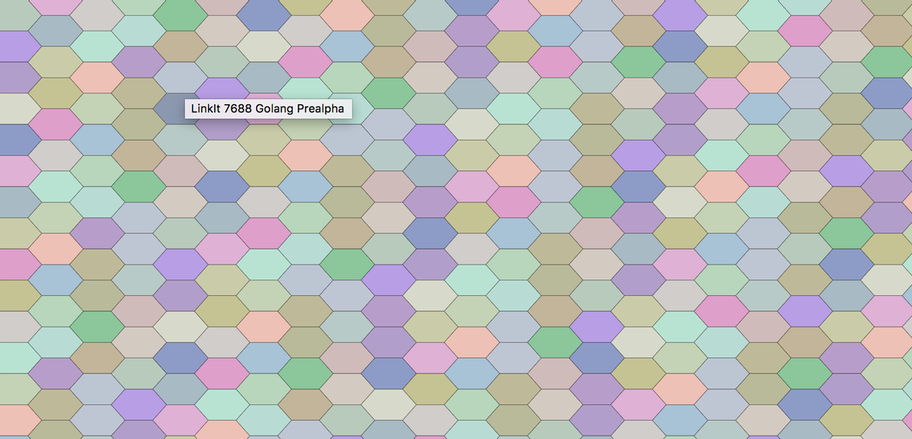
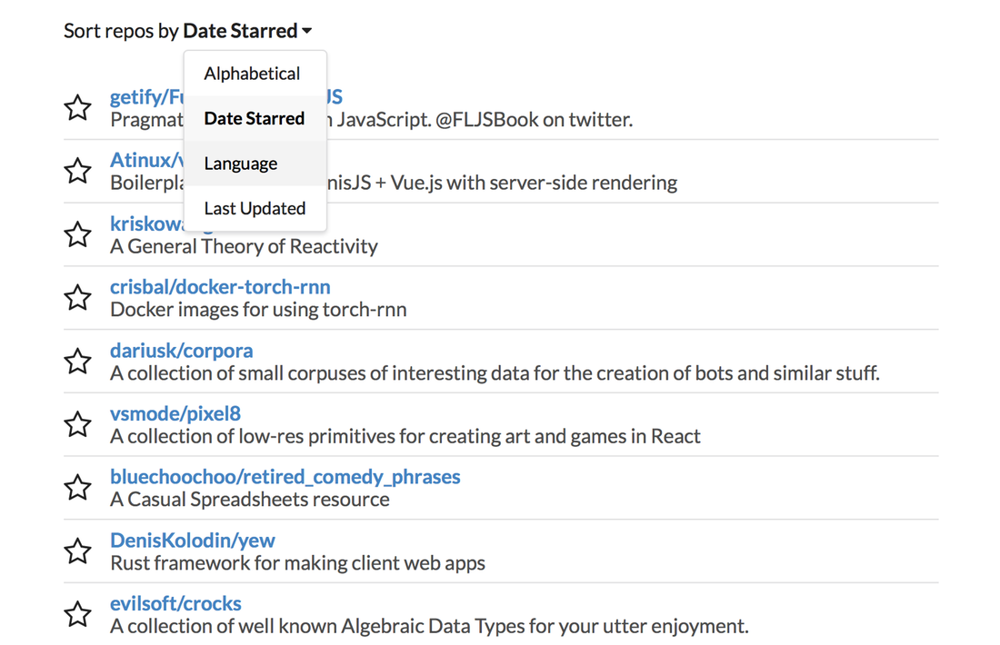
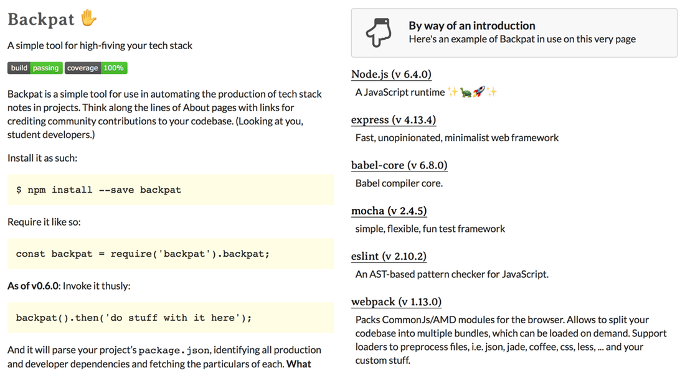

Tessellate

React in front, Node in back, AWS underneath. Tessellate is my formless obsession, a scalable IoT project deployed to 30 devices in a handful of languages from Lua to C#. In its current state I guess you could say it's an art project. It doesn't do much, but it's nice to look at and growing daily. Fun fact: those variably colored hexes were made possible by my PR to react-hexgrid.
Starship

Still in very early stages, Starship is my attempt to make the most of GitHub's starring system by putting it at the heart of a tagging and sorting dev-centered bookmarking app. I'm trying out some oddball stuff on this one, including using gists as flat storage. We shall see. Built on Next.js and Node. Deployed on Now.
backpat.site

A cool little React and Express demo of what makes Backpat (below) tick, styled with a mix of handmade SCSS and a dash of Semantic-UI.
Tender

A gorgeous app and service for writers to track, organize, and visualize their publication submissions — built with AdonisJs, Vue.js, and Bourbon.io.
Backpat

A package for automating the collection and organization of a project's tech stack details, Backpat was designed to simplify the process of crediting the work of the JS community. It's thoroughly tested and built on a foundation of es6 and functional programming.